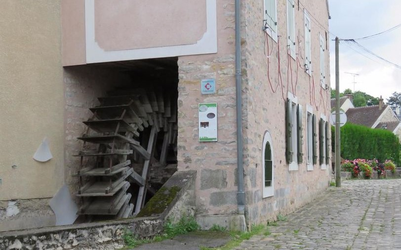
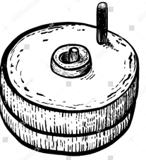
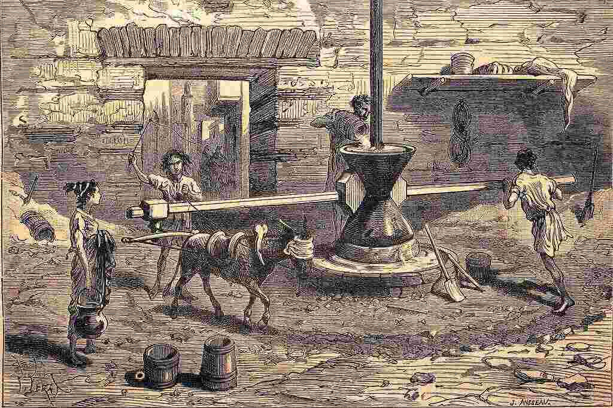
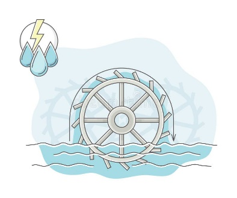
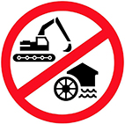

La molinologie est notre passion. Nous œuvrons pour la promotion et la valorisation des moulins de l'Essonne, troisième patrimoine de France, et défendons les riverains de la rivière Essonne et de ses affluents.
Adhérer à l'ASME, c'est soutenir la préservation de nos rivières et de leur patrimoine meunier, recevoir nos courriels d'actualité et participer à nos conférences, visites et sorties.
Adhérer à l'ASME 91Petite hydroélectricité
« Du Grain au Pain »
« Lieu de Mémoire »
« Visites Pédagogiques »
Le dernier projet a été lancé le dimanche 25 juin 2023 dans le cadre des JPPM 2023.

L'histoire des moulins c'est aussi notre histoire. Dès le Néolithique, les hommes ont cultivé des céréales et, pour les consommer plus facilement, ils ont appris à les broyer puis à les moudre finement pour en faire de la farine — nourriture de base sous forme de galettes et bouillies.



